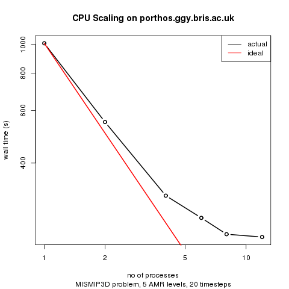

These older instructions work with older gcc (4.1.2 for example) but since you cannot build Glimmer-CISM with gcc 4.1.2 it is probably worth updating your compilers.
To build (and run) BISICLES you need to
Optionally, you might also
BISICLES requires the GNU/Linux operating system (actually, it should compile and run elsewhere, but we never do that), plus both C++ and FORTRAN compilers, a GNU-compatible make, and Perl. On the whole, life is easiest with gcc (including g++ and gfortran), and we shall assume that is what will be used. To build the parallel version, you need an MPI environment, which provides the mpicc and mpicxx (or equivalents). You will also need VisIt to view the data BISICLES produces (other programs can be put to use, but VisIt is by far the most convenient)
There are some site specific notes
Since this readme file lives in the source code repository, you might have already checked the source code out. There are two source trees, Chombo, and BISICLES, and the rest of this guide assumes that you have a directory called $BISICLES_HOME which contains the two.
To obtain the source trees, you first need an ANAG repository account. Once that is sorted out, create a root directory for both source trees
> export BISICLES_HOME=/wherever/you/like #assumes bash... > mkdir -p $BISICLES_HOME > cd $BISICLES_HOME > svn co https://anag-repo.lbl.gov/svn/Chombo/release/3.1 Chombo > svn co https://anag-repo.lbl.gov/svn/BISICLES/public/trunk BISICLES
Chombo requires the hdf5 libraries. The current version of hdf5 is 1.8. However, Chombo was written to build against version 1.6, which has a somewhat different interface than 1.8. Luckily, the hdf5 developers took this into account and provided a backwards compatible 1.6 interface in the current release. Two approaches to hdf5 will work:
The rest of the instructions in this document employ the first approach, but the compatibility flag is included in the provided Makefile setup, so one can also use hdf5 1.8 if that is more convenient (and is recommended if using a shared resource which may already have an up-to-date hdf5 installation.)
Glimmer-CISM also requires netcdf, and in a non-standard configuration to boot. BISICLES includes some complementary tools which require netcdf. So, while you could use the version installed on your system it is often simpler to compile netCDF from source.
There should be a script, older_download_dependencies.sh that will get the (version 1.6) hdf5 sources and unpack them, twice : once into hdf5/serial/src and once into hdf5/parallel/src. It assumes $BISICLES_HOME is set. It should contain the following
cd $BISICLES_HOME
#get hdf5 sources
if !(test -e hdf5-1.6.10.tar.gz) then
echo "downloading hdf5-1.6.10.tar.gz"
wget http://www.hdfgroup.org/ftp/HDF5/prev-releases/hdf5-1.6.10/src/hdf5-1.6.10.tar.gz
fi
tar -zxf hdf5-1.6.10.tar.gz -C hdf5/parallel/src
tar -zxf hdf5-1.6.10.tar.gz -C hdf5/serial/src
#get netcdf sources
if !(test -e netcdf-4.1.2.tar.gz) then
echo "downloading netcdf-4.1.2.tar.gz"
wget ftp://ftp.unidata.ucar.edu/pub/netcdf/netcdf-4.1.2.tar.gz
fi
tar -zxf netcdf-4.1.2.tar.gz -C netcdf/parallel/src
tar -zxf netcdf-4.1.2.tar.gz -C netcdf/serial/src
If you want to build a single-processor BISICLES, then build hdf5 in hdf5/serial/src,
and if you want to build a multi-processor BISICLES, then build hdf5 in hdf5/parallel/src.
Similar pairs of directories will be built for netcdf.
> cd $BISICLES_HOME/hdf5/serial/src/hdf5-1.6.10/and configure hdf5 like so
CC=gcc CFLAGS=-fPIC ./configure --prefix=$BISICLES_HOME/hdf5/serial/ --enable-shared=nonote the --enable-shared=no. This isn't strictly necessary - you could use shared libraries - but we find they are more trouble than they are worth, especially when running on clusters. The -fPIC flag will be useful later if you want to build the experimental libamrfile.so shared library that can be used to manipulate Chombo (and BISICLES) output with languages that support a plain C function calling convention, like FORTRAN 90 and GNU R (and hopefully MATLAB). Configure will spit out a long list of tests, and hopefully pass the all to produce a report that reads as follows:
Configure Summary
Compiling Options:
Compilation Mode: Production
C Compiler: gcc
CFLAGS: -fPIC -std=c99 -Wno-long-long -O -fomit-frame-pointer -finline-functions
CPPFLAGS: -UH5_DEBUG_API -DNDEBUG -D_LARGEFILE_SOURCE -D_LARGEFILE64_SOURCE -D_FILE_OFFSET_BITS=64 -D_POSIX_SOURCE -D_BSD_SOURCE
LDFLAGS:
Debug Mode: None
Shared Libraries: No
Static Libraries: Yes
Statically Linked Executables: No
Tracing: No
Optimization Instrumentation: No
Languages:
----------
C++: No
Fortran: No
Features:
---------
dmalloc: No
Function Stack Tracing: Disabled
GPFS: No
Strict File Format Checks: Disabled
HDF5 v1.4 Compatibility: No
I/O filters (external): deflate
I/O filters (internal): shuffle,fletcher32
Linux Large File Support (LFS): Enabled
MPE: No
Parallel HDF5: No
Threadsafety: Disabled
High Level library: Enabled
Don't worry that the C++ and Fortran languages are not enabled : Chombo uses the C interface,
and (when we come to compile that too), so does netcdf. Assuming this is all OK, type
> make installand you, after a round of compiling and copying, you should see that the hdf5 libraries bin,doc,include and src have appeared in $BISICLES_HOME/hdf5/serial/.
> cd $BISICLES_HOME/hdf5/parallel/src/hdf5-1.6.10/and configure hdf5, this time enabling MPI through the use of mpicc in place of gcc
> CC=mpicc ./configure --prefix=$BISICLES_HOME/hdf5/parallel/ --enable-shared=noThis time, configure's final report should read
Configure Summary
Compiling Options:
Compilation Mode: Production
C Compiler: mpicc
CFLAGS: -std=c99 -Wno-long-long -O -fomit-frame-pointer -finline-functions
CPPFLAGS: -UH5_DEBUG_API -DNDEBUG -D_LARGEFILE_SOURCE -D_LARGEFILE64_SOURCE -D_FILE_OFFSET_BITS=64 -D_POSIX_SOURCE -D_BSD_SOURCE
LDFLAGS:
Debug Mode: None
Shared Libraries: No
Static Libraries: Yes
Statically Linked Executables: No
Tracing: No
Optimization Instrumentation: No
Languages:
----------
C++: No
Fortran: No
Features:
---------
dmalloc: No
Function Stack Tracing: Disabled
GPFS: No
Strict File Format Checks: Disabled
HDF5 v1.4 Compatibility: No
I/O filters (external): deflate
I/O filters (internal): shuffle,fletcher32
Linux Large File Support (LFS): Enabled
MPE: No
Parallel HDF5: Yes
Threadsafety: Disabled
High Level library: Enabled
Note especially the line 'Parallel HDF5: Yes'
> make installthis time, the bin,doc,include and src directories should end up in $BISICLES_HOME/hdf5/parallel/.
This doesn't work with NetCDF 4.1.3, which wants some part of the hdf5 library than only exists in version 1.8. Hopefully, we should be able to resolve this by building hdf5 1.8 to be compatible with hdf5 1.6 (the option exists) but for now, we'll stick with netcdf 4.1.2.
Before starting, make sure that you can run gcc,g++ and gfortran. Enter the appropriate source directory
> cd $BISICLES_HOME/netcdf/serial/src/netcdf-4.1.2/Now, netcdf needs to link hdf5 : it doesn't really matter which version but we might as well use the one we have. Also, we want to avoid building a separate fortran library (libnetcdff.a); instead we want to include both C and FORTRAN stubs in libnetcdf.a. So, we have a custom configure line
> CC=gcc CPPFLAGS=-I$BISICLES_HOME/hdf5/serial/include/ CXX=g++ FC=gfortran LDFLAGS=-L$BISICLES_HOME/hdf5/serial/lib/ ./configure --prefix=$BISICLES_HOME/netcdf/serial --enable-separate-fortran=no --enable-shared=no --enable-static=yes --enable-dap=noNext, compile, test, and install netcdf
> make check installand assuming all goes well, netcdf 4.1.2 will now be installed in $BISICLES_HOME/netcdf/serial
This doesn't work with NetCDF 4.1.3, which wants some part of the hdf5 library than only exists in version 1.8. Hopefully, we should be able to resolve this by building hdf5 1.8 to be compatible with hdf5 1.6 (the option exists) but for now, we'll stick with netcdf 4.1.2.
So far, the only difference between parallel and serial netcdf installs is the link to parallel hdf5 and the use of the MPI compiler wrapper. Possibly, building two versions of netcdf is a waste of time.
> cd $BISICLES_HOME/netcdf/parallel/src/netcdf-4.1.2/ > CC=mpicc CXX=mpicxx CPPFLAGS=-I$BISICLES_HOME/hdf5/parallel/include/ LDFLAGS=-L$BISICLES_HOME/hdf5/parallel/lib/ ./configure --prefix=$BISICLES_HOME/netcdf/parallel --enable-separate-fortran=no --enable-shared=no --enable-static=yes --enable-dap=no > make check install
Next we need to set up Combo's configuration (which BISICLES will inherit automatically). The main task here is create a file called $BISICLES_HOME/Chombo/lib/mk/Make.defs.local, and there is version stored in this directory that should be easy enough to edit. First, copy it into $BISICLES_HOME
> cp $BISICLES_HOME/BISICLES/docs/Make.defs.local $BISICLES_HOMEAt the very least, you will need to edit the line that reads
BISICLES_HOME=...,to give the correct value. If you don't have MPI, there are a few lines to comment out. You might also want to tinker with the optimization flags and so on. Then create a link so that Chombo sees Make.defs.local in the place it expects
>ln -s $BISICLES_HOME/Make.defs.local $BISICLES_HOME/Chombo/lib/mk/Make.defs.local
To make use of the python interface, you need to ensure that you have a suitable python installation. This is usually straightforward in modern GNU/linux distributions, since Python is so widespread. Before you can compile BISICLES with Python support, find out
$BISICLES_HOME/BISICLES/code/mk/Make.defsto define the variables PYTHON_INC and PYTHON_LIBS. There are several examples in the file already.
when you come to compile BISICLES, you should see flags like -DHAVE_PYTHON included in the compilation
Now we are ready to build one or more BISICLES executables. If you plan to do development work on the code itself, you will want to build an unoptimized version to run in gdb. Run
> cd $BISICLES_HOME/BISICLES/code/exec2D > make allThis will build a set of Chombo libraries, and then BISICLES. Hopefully, it will complete without errors, and you will end up with an executable called
driver2d.Linux.64.g++.gfortran.DEBUG.ex. This one is most useful for low-level debugging of the code - if you are not planning to do that, there is no need for it. If you have a serial computer only, run
> cd $BISICLES_HOME/BISICLES/code/exec2D > make all OPT=TRUEto get an optimized executable called
driver2d.Linux.64.g++.gfortran.DEBUG.OPT.ex. An optimized parallel executable
driver2d.Linux.64.mpic++.gfortran.DEBUG.OPT.MPI.excan be built like so
> cd $BISICLES_HOME/BISICLES/code/exec2D > make all OPT=TRUE MPI=TRUEFor serious runs, this is the one you need. Even on workstations with a few processors (like dartagnan.ggy.bris.ac.uk) noticeable (2X-4X) speed improvements are realized by running parallel code, and on clusters like bluecrystal or hopper.nersc.gov we have obtained 100X speedups for big enough problems (and hope to obtain 1000X speedups).
Finally, should you feel the urge, you can have a non-optimized parallel version, which can be used for hunting down low-level bugs that crop up in parallel operation but not in serial operation.
On occasion it might be necessary to rebuild BISICLES entirely, rather than just those parts where a file has changed. To do so, run
make cleanfor unoptimized, serial builds,
make clean OPT=TRUEfor optimized serial builds, and
make clean OPT=TRUE MPI=TRUEfor optimized parallel builds
In the event even more housecleaning is desired, the "realclean" target does everything the "clean" target does, and additionally removes many other user-generated files, including all files with the ".hdf5" suffix (including checkpoint and plot files).
All the data to run Frank Pattyn's MISMIP3D P075 experiment is already present. Change to the MISMIP3D subdirectory, and generate some input files from a template.
> cd $BISICLES_HOME/BISICLES/examples/MISMIP3D > sh make_inputs.shthen we are ready to go.
$BISICLES_HOME/BISICLES/code/exec2D/driver2d.Linux.64.g++.gfortran.DEBUG.OPT.ex inputs.mismip3D.p075.l1l2.l3 > sout.0 2>err.0 &You can watch progress by typing
> tail -f sout.0and eventually, you will get a series of plot*2d.hdf5 files that you can view in visit
> nohup mpirun -np 4 $BISICLES_HOME/BISICLES/code/exec2D/driver2d.Linux.64.mpic++.gfortran.DEBUG.OPT.MPI.ex inputs.mismip3D.p075.l1l2.l5 &replace -np 4 with the appropriate count for your machine: this is usually not the number of CPU cores because these will typically share some resources. A good guess is the number of memory buses. Ideally, do a series of scaling experiments to come up with a graph like this one 
See also the Site specific notes
You can watch progress by typing
> tail -f pout.0and eventually, you will get a series of plot*2d.hdf5 files that you can view in visit
To compile the file tools you might need to edit file $BISICLES_HOME/BISICLES/code/mk/Make.defs. If you have installed BISICLES (and netcdf in particular) following this guide, there should be no need, but otherwise make sure that the variable NETCDF_HOME points to the parent directory of the netcdf include and lib directories. There is little point in building parallel file tools, so type
make allnow, say you have a NetCDF file called data.nc, which contains 2D fields named thk and topg arranged on a regular grid (with equal spacing in x and y), and must also contain a 1D field called x, you can run
$BISICLES_HOME/BISICLES/code/filetools/nctoamr2d.Linux.64.g++.gfortran.DEBUG.ex data.nc data.2d.hdf5 thk topgto obtain a file called data.2d.hdf5 that BISICLES can read as (say) thickness and topography data. There are a number of other file tools.
The control problem code is used to solve an optimization problem (inverse problem, or ill-posed problem), using the optimal control methods described by (e.g) MacAyeal (1993) Journal of Glaciology, vol 39 p 91 and elsewhere. It lives somewhat apart from the rest on BISICLES, and has its own executable
cd $BISICLES_HOME/BISICLES/control make all OPT=TRUE #compile a serial optimized version make all OPT=TRUE MPI=TRUE #compile a parallel optimized versionThere is a Pine Island Glacier example which shows how to run the control problem and what to do with its results.